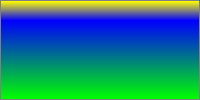

CSS is a language for describing the rendering of structured documents (such as HTML and XML) on screen, on paper, in speech, etc. This module contains the features of CSS level 3 relating to the <image> type and replaced elements. It includes and extends the functionality of CSS level 2 [[!CSS21]], which builds on CSS level 1 [[CSS1]]. The main extensions compared to level 2 are the generalization of the <url> type to the <image> type, several additions to the ''<image>'' type, a generic sizing algorithm for images and other replaced content in CSS, and several properties controlling the interaction of replaced elements and CSS's layout models.
Status of this document
This specification is a Last Call Working Draft. All
persons are encouraged to review this document and send comments
to the www-style
mailing list as described above. The deadline for
comments is 7 February 2012.
The 'object-fit', 'object-position', 'image-orientation', and 'image-resolution' properties
Table of contents
Introduction
This section is not normative.
In CSS Levels 1 and 2, image values, such as those used in the
'background-image' property, could only be given by a single URL
value. This module introduces additional ways of representing 2D
images, for example as a list of URIs denoting fallbacks,
or as a gradient.
This module also defines several properties for manipulating
raster images and for sizing or
positioning replaced elements
such as images within the box determined by the CSS layout algorithms.
It also defines in a generic way CSS's sizing algorithm
for images and other replaced elements.
Module Interactions
This module defines and extends the ''<image>'' value type
defined in [[!CSS3VAL]]. Furthermore it replaces the ''<url>''
type in the 'background-image' and 'list-style-image' definitions
in CSS1 and CSS2 and adds ''<image>'' as an alternative to
''<url>'' in the 'content' property's value. It is presumed that
CSS specifications beyond CSS2.1 will use the ''<image>'' notation
in place of ''<url>'' where 2D images are expected. (See e.g.
[[CSS3BG]].)
Of the properties defined in this module, only 'image-resolution'
applies to ::first-line and ::first-letter.
Values
This specification follows the CSS property definition conventions from [[!CSS2]].
Value types not defined in this specification are defined in CSS Values & Units [[!CSS-VALUES-3]].
Other CSS modules may expand the definitions of these value types.
In addition to the property-specific values listed in their definitions,
all properties defined in this specification
also accept the CSS-wide keywords keywords as their property value.
For readability they have not been repeated explicitly.
Resolution Units: the <resolution> type
This specification defines the following units as part of the <resolution>
value type:
''dpi''
dots per inch
''dpcm''
dots per centimeter
''dppx''
dots per ''px'' unit
The ''<resolution>'' unit represents the size of a single "dot" in a
graphical representation by indicating how many of these dots fit in a
CSS 'in', 'cm', or 'px'.
For uses, see e.g. the ''resolution'' media query in [[MEDIAQ]]
or the 'image-resolution' property defined below.
Note that due to the 1:96 fixed ratio of CSS ''in'' to
CSS ''px'', ''1dppx'' is equivalent to ''96dpi''. This corresponds to
the default resolution of images displayed in CSS: see 'image-resolution'.
The following @media rule uses Media Queries [[MEDIAQ]] to assign
some special style rules to devices that use two or more device pixels
per CSS ''px'' unit:
An ''<image>'' can be used in many CSS properties, including the
'background-image', 'list-style-image', 'cursor' properties [[!CSS21]] (where it replaces the ''<url>'' component in the property's value).
In some cases, an image is invalid, such as a ''<url>'' pointing to a resource that is not a valid image format. An invalid image is rendered as a solid-color ''transparent'' image with no intrinsic dimensions. However, invalid images have special behavior in some contexts, such as the ''image()'' notation.
Image References and Image Slices: the ''<url>'' type and ''url()'' notation
The simplest way to indicate an image is to reference an image file by URL. This can be done with the ''url()'' notation, defined in [[!CSS21]].
In the example below, a background image is specified with ''url()''
syntax:
background-image: url(wavy.png);
If the UA cannot download, parse, or otherwise successfully display the contents at the URL as an image, it must be treated as an invalid image.
Image Fallbacks and Annotations: the ''image()'' notation
Each ''<string>'' or ''<url>'' inside ''image()'' represents an image, just as if the ''url()'' notation had been used. As usual for URLs in CSS, relative URLs are resolved to an absolute URL (as described in Values & Units [[!CSS3VAL]]) when a specified ''image()'' value is computed.
Image Fragments
When a URL specified in ''image()'' represents a portion of a resource
(e.g. by the use of media fragment identifiers)
that portion is clipped out of its context and used as a standalone image.
...the background of the element will be the portion of the image that starts at (40px,0px)
and is 20px wide and tall, which is just the circle with a quarter filled in.
* SVG-in-<img> support required. Click the picture to view the SVG directly.
So that authors can take advantage of CSS's forwards-compatible parsing
rules to provide a fallback for image slices, implementations that support
the ''image()'' notation must support the xywh=#,#,#,#
form of media fragment identifiers for images specified via ''image()''. [[!MEDIA-FRAGS]]
Note that image fragments can also be used with the ''url()'' notation. However, a legacy UA that doesn't understand the media fragments notation will ignore the fragment and simply display the entirety of the image.
Since the ''image()'' notation requires UAs to support media fragments, authors can take advantage of CSS's forward-compatible parsing rules to provide a fallback when using an image fragment URL:
background-image: url('swirl.png'); /* old UAs */
background-image: image('sprites.png#xywh=10,30,60,20'); /* new UAs */
Image Fallbacks
Multiple ''<image-decl>s'' can be given separated by commas, in which case the function represents the first image that's not an invalid image. The final argument can specify a ''<color>'' to serve as an ultimate fallback; this can be used, e.g. for 'background-image', to ensure adequate contrast if none of the preceding ''<image-decl>s'' can be used. If the final argument is a ''<color>'', it represents a solid-color image of the given color with no intrinsic dimensions. If all of the provided ''<image-decl>s'' are invalid images and a fallback color was not provided as the last argument, the entire ''image()'' function must be treated as an invalid image.
The rule below would tell the UA to load ''wavy.svg'' if it can; failing that to load ''wavy.png''; failing that to display ''wavy.gif''. For example, the browser might not understand how to render SVG images, and the PNG may be temporarily 404 (returning an HTML 404 page, which the browser can't decode as an image) due to a server move, so the GIF is used until one of the previous problems corrects itself.
The fallback color can be used to ensure that text is still readable even when the image fails to load. For example, the following code works fine if the image is rectangular and has no transparency:
When the image doesn't load, the background color is still there to ensure that the white text is readable. However, if the image has some transparency, the black will be visible behind it, which is probably not desired. The ''image()'' function addresses this:
Now, the black won't show at all if the image loads, but if for whatever reason the image fails, it'll pop in and prevent the white text from being set against a white background.
If a URL uses a fragment identifier syntax that the implementation does not understand, or does not consider valid for that type of image, the URL must be treated as representing an invalid image. This error-handling is limited to image(), and not in the definition of URL, for legacy compat reasons.
For example, if a future specification defined a way to refer to a specific frame of an animated GIF with a fragment identifier, an author could write the following to get newer browsers to use the GIF's frame, and older browsers to instead download the fallback image:
At times, one may need a solid-color image for a property or function that does not accept the ''<color>'' type directly. The ''image()'' function can be used for this: by specifying only a color without any URLs, the function immediately falls back to representing a solid-color image of the chosen color.
In the above, the background is the image "bg-image.png", overlaid with partially-transparent blue.
Gradients
A gradient is an image that smoothly fades from one color to another. These
are commonly used for subtle shading in background images, buttons, and many
other things. The gradient notations described in this section allow an author to
specify such an image in a terse syntax, so that the UA can generate the image
automatically when rendering the page.
The syntax of a <gradient> is:
As with the other <image> types defined in this specification,
gradients can be used in any property that accepts images. For example:
background: linear-gradient(white, gray);
list-style-image: radial-gradient(circle, #006, #00a 90%, #0000af 100%, white 100%)
A gradient is drawn into a box with the dimensions of the concrete
object size, referred to as the gradient box. However, the gradient itself has no intrinsic dimensions.
For example, if you use a gradient as a background, by default the gradient will draw into a gradient box the size of the element's padding box. If 'background-size' is explicitly set to a value such as ''100px 200px'', then the gradient box will be 100px wide and 200px tall. Similarly, for a gradient used as a 'list-style-image', the box would be a 1em square, which is the default object size for that property.
Linear Gradients: the ''linear-gradient()'' notation
A linear gradient is created by specifying a gradient line and then several
colors placed along that line. The image is constructed by creating an
infinite canvas and painting it with lines perpendicular to the gradient line,
with the color of the painted line being the color of the gradient line
where the two intersect. This produces a smooth fade from each color to
the next, progressing in the specified direction.
The first argument to the function specifies the gradient line,
which gives the gradient a direction and determines how color-stops are
positioned. It may be omitted; if so, it defaults to ''to bottom''.
The gradient line's direction may be specified in two ways:
using angles
For the purpose of this argument, ''0deg'' points upward, and positive angles represent clockwise rotation, so ''90deg'' point toward the right.
using keywords
If the argument is ''to top'', ''to right'', ''to bottom'', or ''to left'', the angle of the gradient line is ''0deg'', ''90deg'', ''180deg'', or ''270deg'', respectively.
If the argument instead specifies a corner of the box such as ''to top left'', the gradient line must be angled such that it points into the same quadrant as the specified corner, and a line drawn perpendicular to the gradient line through the center of the gradient box intersects the two neighboring corners.
Starting from the center of the gradient box, extend a line at the specified angle in both directions. The ending point is the point on the gradient line where a line drawn perpendicular to the gradient line would intersect the corner of the gradient box in the specified direction. The starting point is determined identically, but in the opposite direction.
It is expected that the next level of this module will provide the ability to define the gradient's direction relative to the current text direction and writing-mode.
This example illustrates visually how to calculate the
gradient line from the rules above. This shows the starting
and ending point of the gradient line, along with the actual
gradient, produced by an element with
''background: linear-gradient(45deg, white, black);''.
Notice how, though the starting point and ending point are outside
of the box, they're positioned precisely right so that the gradient
is pure white exactly at the corner, and pure black
exactly at the opposite corner. That's intentional, and
will always be true for linear gradients.
The gradient's color stops are typically placed between the starting point
and ending point on the gradient line, but this isn't required - the
gradient line extends infinitely in both directions. The starting point
and ending point are merely arbitrary location markers - the starting point
defines where 0%, 0px, etc are located when specifying color-stops, and
the ending point defines where 100% is located. Color-stops are allowed
to have positions before 0% or after 100%.
The color of the gradient at any point is determined by finding the unique line passing through that point that is perpendicular to the gradient line. The point's color is the color of the gradient line at the point where this line intersects it.
Linear Gradient Examples
All of the following ''linear-gradient()'' examples are presumed to be
backgrounds applied to a box that is 200px wide and 100px tall.
Below are various ways of specifying a basic vertical gradient:
This demonstrates the use of an angle in the gradient. Note that, though the angle is not exactly the same as the angle between the corners, the gradient line is still sized so as to make the gradient yellow exactly at the upper-left corner, and blue exactly at the lower-right corner.
This demonstrates a 3-color gradient, and how to specify the location of a stop explicitly:
linear-gradient(yellow, blue 20%, #0f0);

This demonstrates* a corner-to-corner gradient specified with keywords. Note how the gradient is red and blue exactly in the bottom-left and top-right corners, respectively, exactly like the second example. Additionally, the angle of the gradient is automatically computed so that the color at 50% (in this case, white) stretches across the top-left and bottom-right corners.
linear-gradient(to top right, red, white, blue)
* SVG-in-HTML support required to view the image.
Radial Gradients: the ''radial-gradient()'' notation
In a radial gradient, rather than colors smoothly fading from one side
of the gradient box to the other as with linear gradients, they instead emerge from
a single point and smoothly spread outward in a circular or elliptical shape.
A radial gradient is specified by indicating the center of the gradient (where the 0% ellipse will be) and the size and shape of the ending shape (the 100% ellipse). Color stops are given as a list, just as for ''linear-gradient()''. Starting from the center and progressing towards (and potentially beyond) the ending shape uniformly-scaled concentric ellipses are drawn and colored according to the specified color stops.
Here is an example of a circular radial gradient 5em wide and
positioned with its center in the top left corner:
radial-gradient(5em circle at top left, yellow, blue)
The arguments are defined as follows:
<position>
Determines the center of the gradient. The <position> value type (which is also used for 'background-position') is defined in [[!CSS3VAL]], and is resolved using the center-point as the object area and the gradient box as the positioning area. If this argument is omitted, it defaults to ''center''.
<shape>
Can be either ''circle'' or ''ellipse''; determines whether the
gradient's ending shape is a circle or an ellipse, respectively.
If <shape> is omitted, the ending shape defaults
to a circle if the <size> is a single <length>,
and to an ellipse otherwise.
<size>
Determines the size of the gradient's ending shape. If
omitted it defaults to ''farthest-corner''. It can be given explicitly or
by keyword. For the purpose of the keyword definitions, consider the
gradient box edges as extending infinitely in both directions, rather than
being finite line segments.
If the ending-shape is an ellipse, its axises are aligned with the horizontal and vertical axises.
Both ''circle'' and ''ellipse'' gradients accept the following keywords
as their <size>:
''closest-side''
The ending shape is sized so that that it exactly meets the
side of the gradient box closest to the gradient's center. If the shape is an
ellipse, it exactly meets the closest side in each dimension.
''farthest-side''
Same as ''closest-side'', except the ending shape is sized
based on the farthest side(s).
''closest-corner''
The ending shape is sized so that that it passes through the
corner of the gradient box closest to the gradient's center. If the shape is an
ellipse, the ending shape is given the same aspect-ratio
it would have if ''closest-side'' were specified.
''farthest-corner''
Same as ''closest-corner'', except the ending shape is
sized based on the farthest corner. If the shape is an ellipse,
the ending shape is given the same aspect ratio it would
have if ''farthest-side'' were specified.
If <shape> is specified as ''circle'' or is omitted, the
<size> may be given explicitly as:
<length>
Gives the radius of the circle explicitly. Negative values are
invalid.
Note that percentages are not allowed here; they can only be used to specify the size of an elliptical gradient, not a circular one. This restriction exists because there is are multiple reasonable answers as to which dimension the percentage should be relative to. A future level of this module may provide the ability to size circles with percentages, perhaps with more explicit controls over which dimension is used.
If <shape> is specified as ''ellipse'' or is omitted,
<size> may instead be given explicitly as:
[<length> | <percentage>]{2}
Gives the size of the ellipse explicitly. The first value represents
the horizontal radius, the second the vertical radius. Percentages
values are relative to the corresponding dimension of the gradient box.
Negative values are invalid.
Expanded with the above definitions, the grammar becomes:
Color-stops are placed on a gradient ray, similar to the gradient line of linear gradients. The gradient ray is anchored at the center of the gradient and extends toward the right. The 0% location is at the start of the gradient ray, and the 100% location is on the point where the gradient ray intersects the ending shape. A color-stop can be placed at a negative location; though the negative region of the gradient ray is never directly consulted for rendering, color stops placed there can affect the color of non-negative locations on the gradient ray through interpolation or repetition (see repeating gradients). For example, ''radial-gradient(red -50px, yellow 100px)'' produces an elliptical gradient that starts with a reddish-orange color in the center (specifically, #f50) and transitions to yellow. Locations greater than 100% simply specify a location a correspondingly greater distance from the center of the gradient.
The color of the gradient at any point is determined by first finding the unique ellipse passing through that point with the same center, orientation, and ratio between major and minor axises as the ending-shape. The point's color is then the color of the gradient ray at the location where this ellipse intersects it.
Degenerate Radial Gradients
Some combinations of position, size, and shape will produce a circle
or ellipse with a radius of 0. This will occur, for example, if the
center is on a gradient box edge and ''closest-side'' or ''closest-corner'' is
specified or if the size and shape are given explicitly and either of
the radiuses is zero. In these degenerate cases, the gradient must be
be rendered as follows:
If the ending shape is a circle with zero radius:
Render as if the ending shape was a circle whose radius was an arbitrary very small number greater than zero. This will make the gradient continue to look like a circle.
If the ending shape has zero width (regardless of the height):
Render as if the ending shape was an ellipse whose height was an arbitrary very large number and whose width was an arbitrary very small number greater than zero. This will make the gradient look similar to a horizontal linear gradient that is mirrored across the center of the ellipse. It also means that all color-stop positions specified with a percentage resolve to ''0px''.
Otherwise, if the ending shape has zero height:
Render as if the ending shape was an ellipse whose width was an arbitrary very large number and whose height was an arbitrary very small number greater than zero. This will make the gradient look like a solid-color image equal to the color of the last color-stop, or equal to the average color of the gradient if it's repeating.
Radial Gradient Examples
All of the following examples are applied to a box that is 200px wide
and 100px tall.
These examples demonstrate different ways to write the basic syntax for radial gradients:
radial-gradient(yellow, green);
radial-gradient(ellipse at center, yellow 0%, green 100%);
radial-gradient(farthest-corner at 50% 50%, yellow, green);
radial-gradient(circle, yellow, green);
radial-gradient(red, yellow, green);
This image shows a gradient originating from somewhere other than the center of the box:
radial-gradient(farthest-side at left bottom, red, yellow 50px, green);
Here we illustrate a 'closest-side' gradient.
radial-gradient(closest-side at 20px 30px, red, yellow, green);
radial-gradient(20px 30px at 20px 30px, red, yellow, green);
radial-gradient(closest-side circle at 20px 30px, red, yellow, green);
radial-gradient(20px 20px at 20px 30px, red, yellow, green);
Repeating Gradients: the ''repeating-linear-gradient()'' and ''repeating-radial-gradient()'' notations
In addition to <linear-gradient> and <radial-gradient>,
this specification defines <repeating-linear-gradient> and
<repeating-radial-gradient> values. These two notations take the
same values and are interpreted the same as their respective non-repeating
siblings defined previously.
When rendered, however, the color-stops are repeated infinitely in both
directions, with their positions shifted by multiples of the difference
between the last specified color-stop's position and the first specified
color-stop's position. For example, ''repeating-linear-gradient(red 10px, blue 50px)''
is equivalent to ''linear-gradient(..., red -30px, blue 10px, red 10px, blue 50px, red 50px, blue 90px, ...)''.
Note that the last color-stop and first color-stop will always coincide at
the boundaries of each group, which will produce sharp transitions if the
gradient does not start and end with the same color.
Repeating gradient syntax is basically identical to that of non-repeating gradients:
repeating-linear-gradient(red, blue 20px, red 40px)
repeating-radial-gradient(red, blue 20px, red 40px)
repeating-radial-gradient(circle closest-side at 20px 30px, red, yellow, green 100%, yellow 150%, red 200%)
If the distance between the first and last color-stops is non-zero, but is small enough that the implementation knows that the physical resolution of the output device is insufficient to faithfully render the gradient, the implementation must find the average color of the gradient and render the gradient as a solid-color image equal to the average color.
If the distance between the first and last color-stops is zero (or rounds to zero due to implementation limitations), the implementation must find the average color of a gradient with the same number and color of color-stops, but with the first and last color-stop an arbitrary non-zero distance apart, and the remaining color-stops equally spaced between them. Then it must render the gradient as a solid-color image equal to that average color.
If the height of a repeating radial gradient is zero, or is close enough to zero that the implementation knows that the physical resolution of the output device is insufficient to faithfully render the gradient, the implementation must find the average color of the gradient and render the gradient as a solid-color image equal to the average color.
To find the average color of a gradient, run these steps:
Define list as an initially-empty list of premultiplied RGBA colors, and total-length as the distance between first and last color stops.
For each adjacent pair of color-stops, define weight as half the distance between the two color-stops, divided by total-length. Add two entries to list, the first obtained by representing the color of the first color-stop in premultiplied sRGBA and scaling all of the components by weight, and the second obtained in the same way with the second color-stop.
Sum the entries of list component-wise to produce the average color, and return it.
As usual, implementations may use whatever algorithm they wish, so long as it produces the same result as the above.
For example, the following gradient is rendered as a solid light-purple image (equal to rgb(75%,50%,75%)):
repeating-linear-gradient(red 0px, white 0px, blue 0px);
The following gradient would render the same as the previous under normal circumstances (because desktop monitors can't faithfully render color-stops 1/10th of a pixel apart), but would render as a normal repeating gradient if, for example, the author applied "zoom:100;" to the element on which the gradient appears:
repeating-linear-gradient(red 0px, white .1px, blue .2px);
Color-stops are points placed along the line defined by the gradient line
at the beginning of the rule. Color-stops must be specified in order.
Percentages refer to the length of the gradient line, with 0% being at the
starting point and 100% being at the ending point. Lengths are measured
from the starting point in the direction of the ending point. Color-stops
are usually placed between the starting point and ending point, but that's
not required; the gradient line extends infinitely in both directions, and
a color-stop can be placed at any position on the line.
At each color-stop, the line is the color of the color-stop. Between
two color-stops, the line's color is linearly interpolated between the colors
of the two color-stops, with the interpolation taking place in premultiplied
RGBA space. Before the first color-stop, the line is the color of the first
color-stop. After the last color-stop, the line is the color of the last
color-stop.
The following steps must be applied in order to process the list
of color-stops. After applying these rules, all color-stops will have a
definite position and they will be in ascending order:
If the first color-stop does not have a position, set its position to 0%. If the last color-stop does not have a position, set its position to 100%.
If a color-stop has a position that is less than the specified position of any color-stop before it in the list, set its position to be equal to the largest specified position of any color-stop before it.
If any color-stop still does not have a position, then, for each run of adjacent color-stops without positions, set their positions so that they are evenly spaced between the preceding and following color-stops with positions.
If multiple color-stops have the same position, they produce an infinitesimal
transition from the one specified first in the rule to the one specified
last. In effect, the color suddenly changes at that position rather than
smoothly transitioning.
Below are several pairs of gradients. The latter of each pair is a manually "fixed-up" version of the former, obtained by applying the above rules. For each pair, both gradients will render identically. The numbers in each arrow specify which fixup steps are invoked in the transformation.
1. linear-gradient(red, white 20%, blue)
=1=>
linear-gradient(red 0%, white 20%, blue 100%)
2. linear-gradient(red 40%, white, black, blue)
=13=>
linear-gradient(red 40%, white 60%, black 80%, blue 100%)
3. linear-gradient(red -50%, white, blue)
=13=>
linear-gradient(red -50%, white 25%, blue 100%)
4. linear-gradient(red -50px, white, blue)
=13=>
linear-gradient(red -50px, white calc(-25px + 50%), blue 100%)
5. linear-gradient(red 20px, white 0px, blue 40px)
=2=>
linear-gradient(red 20px, white 20px, blue 40px)
6. linear-gradient(red, white -50%, black 150%, blue)
=12=>
linear-gradient(red 0%, white 0%, black 150%, blue 150%)
7. linear-gradient(red 80px, white 0px, black, blue 100px)
=23=>
linear-gradient(red 80px, white 80px, black 90px, blue 100px)
The following example illustrates* the difference between a gradient transitioning in pre-multiplied sRGBA and one transitioning (incorrectly) in non-premultiplied. In both of these example, the gradient is drawn over a white background. Both gradients could be written with the following value:
linear-gradient(90deg, red, transparent, blue)
In premultiplied space, transitions to or from "transparent" always look nice:
On the other hand, if a gradient were to incorrectly transition in non-premultiplied space, the colors near "transparent" would noticeably darken to a grayish color, because "transparent" is actually a shorthand for ''rgba(0,0,0,0)'', or transparent black:
* SVG-in-HTML support required to view the images.
Note: It is recommended that authors not mix different types of units, such as px, em, or %, in a single rule, as this can cause a color-stop to unintentionally try to move before an earlier one. For example, the rule ''background-image: linear-gradient(yellow 100px, blue 50%)'' wouldn't require any fix-up as long as the background area is at least 200px tall. If it was 150px tall, however, the blue color-stop's position would be equivalent to "75px", which precedes the yellow color-stop, and would be corrected to a position of 100px.
Note: The definition and implications of "premultiplied" color spaces
are given elsewhere in the technical literature, but a quick primer is given
here to illuminate the process. Given a color expressed as an rgba() 4-tuple,
one can convert this to a premultiplied representation by multiplying the
red, green, and blue components by the alpha component. For example, a
partially-transparent blue may be given as rgba(0,0,255,.5), which would
then be expressed as [0, 0, 127.5, .5] in its premultiplied representation.
Interpolating colors using the premultiplied representations rather than
the plain rgba representations tends to produce more attractive transitions,
particularly when transitioning from a fully opaque color to fully transparent.
Note that transitions where either the transparency or the color are held constant (for example, transitioning between rgba(255,0,0,100%) and rgba(0,0,255,100%) or rgba(255,0,0,100%) and rgba(255,0,0,0%)) have identical results whether the color interpolation is done in premultiplied or non-premultiplied color-space. Differences only arise when both the color and transparency differ between the two endpoints.
Sizing Images and Objects in CSS
Images used in CSS may come from a number of sources: from binary image
formats (such as gif, jpeg, etc), dedicated markup formats (such as SVG), and
CSS-specific formats (such as the linear-gradient() value type defined in this
specification). As well, a document may contain many other types of objects,
such as video, plugins, or nested documents. These images and objects (just
objects hereafter) may offer many types of sizing information to CSS, or none
at all. This section defines generically the size negotiation model between
the object and the CSS layout algorithms.
Object-Sizing Terminology
In order to define this handling, we define a few terms, to make it
easier to refer to various concepts:
intrinsic dimensions
The term intrinsic dimensions refers to the set of the intrinsic height, intrinsic width, and intrinsic aspect ratio (the ratio between the width and height), each of which may or may not exist for a given object. These intrinsic dimensions represent a preferred or natural size of the object itself; that is, they are not a function of the context in which the object is used. CSS does not define how the intrinsic dimensions are found in general.
Raster images are an example of an object with all three intrinsic dimensions. SVG images designed to scale might have only an intrinsic aspect ratio; SVG images can also be created with only an intrinsic width or height. CSS gradients, defined in this specification, are an example of an object with no intrinsic dimensions at all. Another example of this is embedded documents, such as the <iframe> element in HTML. An object cannot have only two intrinsic dimensions, as any two automatically define the third.
If an object (such as an icon) has multiple sizes, then the largest size (by area) is taken as its intrinsic size. If it has multiple aspect ratios at that size, or has multiple aspect ratios and no size, then the aspect ratio closest to the aspect ratio of the default object size is used. Determine this by seeing which aspect ratio produces the largest area when fitting it within the default object size using a contain fit; if multiple sizes tie for the largest area, the wider size is chosen as its intrinsic size.
specified size
The specified size of an object is given by CSS, such as through the 'width' and 'height' or 'background-size' properties. The specified size can be a definite width and height, a set of constraints, or a combination thereof.
concrete object size
The concrete object size is the result of combining an object's intrinsic dimensions and specified size with the default object size of the context it's used in, producing a rectangle with a definite width and height.
default object size
The default object size is a rectangle with a definite height and
width used to determine the concrete object size when both the
intrinsic dimensions and specified size are missing dimensions.
CSS⇋Object Negotiation
Objects in CSS are sized and rendered as follows:
When an image or object is specified in a document, such as through
a ''url()'' value in a 'background-image' property or an src
attribute on an <img> element, CSS queries the object
for its intrinsic dimensions.
Using the intrinsic dimensions, the specified size,
and the default object size for the context the image or object
is used in, CSS then computes a concrete object size. (See the
following section.) This defines the size
and position of the region the object will render in.
CSS asks the object to render itself at the concrete object size.
CSS does not define how objects render when the concrete object size
is different from the object's intrinsic dimensions. The object
may adjust itself to match the concrete object size in some way,
or even render itself larger or smaller than the concrete object size
to satisfy sizing constraints of its own.
Unless otherwise specified by CSS, the object is then clipped to
the concrete object size.
Concrete Object Size Resolution
Currently the rules for sizing objects are described in each context that
such objects are used. This section defines some common sizing constraints
and how to resolve them so that future specs can refer to them instead of
redefining size resolution in each instance.
Default Sizing Algorithm
The default sizing algorithm is a set of rules commonly used
to find an object's concrete object size. It resolves the simultaneous
constraints presented by the object's intrinsic dimensions and either an
unconstrained specified size or one consisting of only a definite width
and/or height.
Some object sizing rules (such as those for 'list-style-image') correspond
exactly to the default sizing algorithm. Others (such as those for
'border-image') invoke the default sizing algorithm but also apply additional
sizing rules before arriving at a final concrete object size.
The default sizing algorithm is defined as follows:
If the specified size is a definite width and height, the concrete object size is given that width and height.
If the specified size is only a width or height (but not both) then the concrete object size is given that specified width or height. The other dimension is calculated as follows:
If the object has an intrinsic aspect ratio, the missing dimension of the concrete object size is calculated using the intrinsic aspect ratio and the present dimension.
Otherwise, if the missing dimension is present in the object's intrinsic dimensions, the missing dimension is taken from the object's intrinsic dimensions.
Otherwise, the missing dimension of the concrete object size is taken from the default object size.
If the specified size has no constraints:
If the object has an intrinsic height or width, its size is resolved
as if its intrinsic size were given as the specified size.
Otherwise, its size is resolved as a contain constraint
against the default object size.
Cover and Contain Constraint Sizing
Two other common specified sizes are the contain constraint and
the cover constraint, both of which are resolved against a specified
constraint rectangle using the object's intrinsic aspect ratio:
A contain constraint is resolved by setting the
concrete object size to the largest rectangle that has the object's
intrinsic aspect ratio and additionally has neither width nor height
larger than the constraint rectangle's width and height, respectively.
A cover constraint is resolved by setting the
concrete object size to the smallest rectangle that has the object's
intrinsic aspect ratio and additionally has neither width nor height
smaller than the constraint rectangle's width and height, respectively.
In both cases, if the object doesn't have an intrinsic aspect ratio,
the concrete object size is the specified constraint rectangle.
Examples of CSS Object Sizing
The following examples show how the CSS 2.1 and
CSS3 Backgrounds & Borders
sizing algorithms correspond to concepts defined in this specification.
The rules for calculating the concrete object size of a background
are defined in CSS2.1§14.2.1 and
CSS3BG§3.9. CSS2.1 uses the default sizing algorithm with no specified size and the background positioning area as the default object size. [[!CSS21]] In CSS3, 'background-size' property can give a sizing constraint, invoking either the default sizing algorithm or one of the contain or cover constraints. The concrete object size is further adjusted in later steps if 'background-repeat' has a ''round'' value. [[CSS3BG]]
The rules for calculating the concrete object size of a list-style
image are defined in
CSS2.1§12.5.1.
They use the default sizing algorithm with no specified size and a default object size of 1em square.
Border images are sized twice: first the entire image is sized to determine the slice points, then the slices are sized to decorate the border.
The first sizing operation is defined in CSS3BG§6.2 and uses the default sizing algorithm with no specified size, and the border image area as the default object size.
The second operation is defined in CSS3BG§6.2: the default sizing algorithm is used to determine an initial size for each slice with the corresponding border image area part as the default object size. By default the specified size matches this default object size; however the 'border-image-repeat' property can drop the specified size in one or more directions and may also apply an additional rounding step. [[CSS3BG]]
The rules for calculating the concrete object size of a cursor are defined in
CSS2.1 § 18.1: Cursors. The default object size is a UA-defined size that should be based on the size of a typical cursor on the UA's operating system. [[!CSS21]]
Objects inserted via the CSS2.1 'content' property are anonymous
replaced
elements, and are sized the same way. [[!CSS21]] Note that such
anonymous elements have all their non-inherited properties (including
'width', 'height', etc.) set to their initial values.
CSS 2.1 defines the sizing of replaced elements (including those inserted as generated content via 'content') in sections 10.3.2, 10.4, 10.6.2, and 10.7. [[!CSS21]] The 'object-fit' property defined below defines how the concrete object size corresponds to the element's used width and height; by default they coincide.
The 'object-fit' property specifies how the contents of a replaced element
should be fitted to the box established by its used height and width.
''fill''
The replaced content is sized to fill the element's content box: the
object's concrete object size is the element's used width and
height.
''contain''
The replaced content is sized to maintain its aspect ratio while fitting
within the element's content box: its concrete object size is
resolved as a contain constraint against the element's used width
and height.
''cover''
The replaced content is sized to maintain its aspect ratio while filling
the element's entire content box: its concrete object size is
resolved as a cover constraint against the element's used width
and height.
''none''
The replaced content is not resized to fit inside the element's content
box: determine the object's concrete object size using the
default sizing algorithm with no specified size, and a
default object size equal to the replaced element's used width and
height.
''scale-down''
Size the content as if ''none'' or ''contain'' were specified, whichever
would result in a smaller concrete object size.
Note that both ''none'' and ''contain'' respect the content's
intrinsic aspect ratio, so the concept of "smaller" is well-defined.
If the content does not completely fill the replaced element's content box,
the unfilled space shows the replaced element's background.
Since replaced elements always clip their contents to the content box, the
content will never overflow.
See the 'object-position' property for positioning the object with respect to
the content box.
An example showing how four of the values of
'object-fit' cause the replaced element (blue figure) to be scaled to fit
its height/width box (shown with a green background), using the initial
value for 'object-position'. The fifth value, ''scale-down'',
in this case looks identical to ''contain''.
Note: the 'object-fit' property has similar semantics to
the fit attribute in [[SMIL10]] and the <meetOrSlice>
parameter on the
preserveAspectRatio attribute in [[SVG11]].
Note: Per the CSS⇋Object Negotiation
algorithm, the concrete object size (or, in this case, the size of the
content) does not directly scale the object itself - it is merely passed to
the object as information about the size of the visible canvas. How to then
draw into that size is up to the image format. In particular, raster images
always scale to the given size, while SVG uses the given size as the size of
the "SVG Viewport" (a term defined by SVG) and then uses the values of several
attributes on the root <svg> element to determine how to draw itself.
Positioning Objects: the 'object-position' property
The 'object-position' property determines the alignment of the replaced element inside its box. The <position> value type (which is also used for 'background-position') is defined in [[!CSS3VAL]], and is resolved using the concrete object size as the object area and the content box as the positioning area.
Note that areas of the box not covered by the replaced
element will show the element's background.
Image Processing
Overriding Image Resolutions: the 'image-resolution' property
The image resolution is defined as the number of image
pixels per unit length, e.g., pixels per inch. Some image formats can
record information about the resolution of images. This information
can be helpful when determining the actual size of the image in the
formatting process. However, the information can also be wrong, in
which case it should be ignored. By default, CSS assumes a resolution
of one image pixel per CSS ''px'' unit; however, the 'image-resolution'
property allows using some other resolution.
as specified, except with ''<resolution>'' possibly altered
by computing for ''snap'' (see below)
The 'image-resolution' property specifies the intrinsic resolution of all raster images used in or on the element. It affects both content images (e.g. replaced elements and generated content) and decorative images (such as 'background-image'). The intrinsic resolution of an image is used to determine the image's intrinsic dimensions. Values have the following meanings:
''<resolution>''
Specifies the intrinsic resolution explicitly. A "dot" in this case corresponds to a single image pixel.
''from-image''
The image's intrinsic resolution is taken as that specified by the
image format. If the image does not specify its own resolution, the
explicitly specified resolution is used (if given), else it defaults to
''1ddpx''.
''snap''
If the "snap" keyword is provided, the computed ''<resolution>''
(if any) is the specified resolution rounded to the nearest value that
would map one image pixel to an integer number of device pixels.
If the resolution is taken from the image, then the used intrinsic
resolution is the image's native resolution similarly adjusted.
As vector formats such as SVG do not have an intrinsic resolution, this property has no effect on vector images.
Printers tend to have substantially higher resolution than computer
monitors; due to this, an image that looks fine on the screen may look
pixellated when printed out.
The 'image-resolution' property can be used to embed a high-resolution
image into the document and maintain an appropriate size, ensuring
attractive display both on screen and on paper:
img.high-res {
image-resolution: 300dpi;
}
With this set, an image meant to be 5 inches wide at 300dpi will actually
display as 5in wide; without this set, the image would display as approximately 15.6in
wide since the image is 15000 image pixels across, and by default CSS displays 96 image pixels per
inch.
Some image formats can encode the image resolution into the image data.
This rule specifies that the UA should use the image resolution
found in the image itself, falling back to 1 image pixel per CSS
''px'' unit.
img { image-resolution: from-image }
These rules both specify that the UA should use the image resolution
found in the image itself, but if the image has no resolution, the
resolution is set to ''300dpi'' instead of the default ''1dppx''.
Using this rule, the image resolution is set to 300dpi. (The
resolution in the image, if any, is ignored.)
img { image-resolution: 300dpi }
This rule, on the other hand, if used when the screen's resolution
is 96dpi, would instead render the image at 288dpi (so that 3 image
pixels map to 1 device pixel):
img { image-resolution: 300dpi snap; }
The ''snap'' keyword can also be used when the resolution is taken
from the image. In this rule:
img { image-resolution: snap from-image; }
An image declaring itself as 300dpi will, in the situation above,
display at 288dpi (3 image pixels per device pixel) whereas an image
declaring 72dpi will render at 96dpi (1 image pixel per device pixel).
Orienting an Image on the Page: the 'image-orientation' property
If a picture is taken with a camera turned on its side, or a document isn't positioned correctly within a scanner, the resultant image may be "sideways" or even upside-down. The 'image-orientation' property provides a way to apply an "out-of-band" rotation to image source data to correctly orient an image.
Note that some devices will "tag" an image with some metadata indicating its correct orientation, so image viewing software can do the necessary transformation themselves. Due to legacy compatibility restraints, Web browsers are required to ignore this data by default. A future level of this specification is expected to have a value that applies the metadata-specified transformation automatically.
Note that this property is not intended to specify layout transformations such as arbitrary rotation or flipping the image in the horizontal or vertical direction. (See [[CSS3-2D-TRANSFORMS]] for a feature designed to do that.)
It is also not needed to correctly orient an image when printing in landscape versus portrait orientation, as that rotation is done as part of layout. (See [[CSS3PAGE]].)
It should only be used to correct incorrectly-oriented images.
specified value, rounded and normalized (see text)
This property specifies an orthogonal rotation to be applied to an image before it is laid out. It applies only to content images (e.g. replaced elements and generated content), not decorative images (such as 'background-image'). CSS layout processing applies to the image after rotation. This implies, for example:
The intrinsic height and width are derived from the rotated rather than the
original image dimensions.
The height (width) property applies to the vertical (horizontal) dimension
of the image, after rotation.
Positive values cause the image to be rotated to the right (in a clockwise
direction), while negative values cause a rotation to the left. The computed
value of the property is calculated by rounding the specified angle to the
nearest quarter-turn (90deg, 100grad, .25turn, etc.), rounding away from 0
(that is, 45deg is rounded to 90deg, while -45deg is rounded to -90deg), then
moduloing the value by 1 turn (360deg, 400grad, etc.).
The 'image-orientation' property must be applied before any other transformations, such as being specified in the ''image()'' function with an opposite directionality to its context, or using CSS Transforms.
The following example rotates the image 90 degrees clockwise:
The same effect could be achieved with, for example, an angle of -270deg
or 450deg.
Conformance
Document Conventions
Conformance requirements are expressed with a combination of
descriptive assertions and RFC 2119 terminology. The key words “MUST”,
“MUST NOT”, “REQUIRED”, “SHALL”, “SHALL NOT”, “SHOULD”, “SHOULD NOT”,
“RECOMMENDED”, “MAY”, and “OPTIONAL” in the normative parts of this
document are to be interpreted as described in RFC 2119.
However, for readability, these words do not appear in all uppercase
letters in this specification.
All of the text of this specification is normative except sections
explicitly marked as non-normative, examples, and notes. [[!RFC2119]]
Examples in this specification are introduced with the words “for example”
or are set apart from the normative text with class="example",
like this:
This is an example of an informative example.
Informative notes begin with the word “Note” and are set apart from the
normative text with class="note", like this:
Note, this is an informative note.
Conformance Classes
Conformance to CSS Image Values and Replaced Content Module Level 3
is defined for three conformance classes:
A style sheet is conformant to CSS Image Values and Replaced Content Module Level 3 if all of its statements that use syntax defined in this module are valid according to the generic CSS grammar and the individual grammars of each feature defined in this module.
A renderer is conformant to CSS Image Values and Replaced Content Module Level 3
if, in addition to interpreting the style sheet as defined by the
appropriate specifications, it supports all the features defined
by CSS Image Values and Replaced Content Module Level 3 by parsing them correctly
and rendering the document accordingly. However, the inability of a
UA to correctly render a document due to limitations of the device
does not make the UA non-conformant. (For example, a UA is not
required to render color on a monochrome monitor.)
An authoring tool is conformant to CSS Image Values and Replaced Content Module Level 3
if it writes style sheets that are syntactically correct according to the
generic CSS grammar and the individual grammars of each feature in
this module, and meet all other conformance requirements of style sheets
as described in this module.
Partial Implementations
So that authors can exploit the forward-compatible parsing rules to
assign fallback values, CSS renderers must
treat as invalid (and ignore
as appropriate) any at-rules, properties, property values, keywords,
and other syntactic constructs for which they have no usable level of
support. In particular, user agents must not selectively
ignore unsupported component values and honor supported values in a single
multi-value property declaration: if any value is considered invalid
(as unsupported values must be), CSS requires that the entire declaration
be ignored.
Experimental Implementations
To avoid clashes with future CSS features, the CSS2.1 specification
reserves a prefixed
syntax for proprietary and experimental extensions to CSS.
Prior to a specification reaching the Candidate Recommendation stage
in the W3C process, all implementations of a CSS feature are considered
experimental. The CSS Working Group recommends that implementations
use a vendor-prefixed syntax for such features, including those in
W3C Working Drafts. This avoids incompatibilities with future changes
in the draft.
Non-Experimental Implementations
Once a specification reaches the Candidate Recommendation stage,
non-experimental implementations are possible, and implementors should
release an unprefixed implementation of any CR-level feature they
can demonstrate to be correctly implemented according to spec.
To establish and maintain the interoperability of CSS across
implementations, the CSS Working Group requests that non-experimental
CSS renderers submit an implementation report (and, if necessary, the
testcases used for that implementation report) to the W3C before
releasing an unprefixed implementation of any CSS features. Testcases
submitted to W3C are subject to review and correction by the CSS
Working Group.
For this specification to be advanced to Proposed Recommendation,
there must be at least two independent, interoperable implementations
of each feature. Each feature may be implemented by a different set of
products, there is no requirement that all features be implemented by
a single product. For the purposes of this criterion, we define the
following terms:
independent
each implementation must be developed by a
different party and cannot share, reuse, or derive from code
used by another qualifying implementation. Sections of code that
have no bearing on the implementation of this specification are
exempt from this requirement.
interoperable
passing the respective test case(s) in the
official CSS test suite, or, if the implementation is not a Web
browser, an equivalent test. Every relevant test in the test
suite should have an equivalent test created if such a user
agent (UA) is to be used to claim interoperability. In addition
if such a UA is to be used to claim interoperability, then there
must one or more additional UAs which can also pass those
equivalent tests in the same way for the purpose of
interoperability. The equivalent tests must be made publicly
available for the purposes of peer review.
implementation
a user agent which:
implements the specification.
is available to the general public. The implementation may
be a shipping product or other publicly available version
(i.e., beta version, preview release, or “nightly build”).
Non-shipping product releases must have implemented the
feature(s) for a period of at least one month in order to
demonstrate stability.
is not experimental (i.e., a version specifically designed
to pass the test suite and is not intended for normal usage
going forward).
The specification will remain Candidate Recommendation for at least
six months.
Acknowledgments
Thanks to the Webkit team, Brad Kemper, Brian Manthos, and Alan Gresley for their contributions to the definition of gradients;
to Melinda Grant for her work on 'object-fit', 'object-position', and 'image-orientation';
to Michael Day, Håkon Lie, and Shinyu Murakami for ''image-resolution'';
and to L. David Baron, Kang-Hao Lu, Leif Arne Storset, Erik Dahlstrom, and Øyvind Stenhaug for their careful review, comments, and corrections.
References
Normative references
Other references
Changes Since Last Call
Major changes include:
The ''element()'' feature has been deferred to Level 4.
The directional images feature (''ltr''/''rtl'' annotations in ''image()'')
has been deferred to Level 4 to address some design-level feedback.
Images referenced with unsupported URL fragment syntax are now considered
invalid (and trigger fallback) within ''image()''.
The 'object-fit' property no longer resizes the element's content box in
any cases.
The 'image-orientation' property is now inherited.
Significant details updated:
There is now a definition for invalid images, which trigger fallback
in the ''image()'' notation.
Clarified that media fragments are only required to be supported within
''image()'' in order to satisfy the prerequisite for supporting ''image()''.
Defined how to determine the closeness of two aspect ratios (used in
the definition of intrinsic dimensions).
Corrected error in which 'image-orientation' was applied after CSS
transforms.
The 'object-fit' and 'object-position' properties may no longer be
aliased to 'image-fit' and 'image-position'. A future edition of the
CSS Print Profile may allow
this for printer implementations, however.
There were also many clarifications and several sections were rearranged to
make them easier to read.
![[An image showing a box with a background shading gradually from white in the bottom-left corner to black in the top-right corner. There is a line, illustrating the gradient line, angled at 45 degrees and passing through the center of the box. The starting point and ending point of the gradient line are indicated by the intersection of the gradient line with two additional lines that pass through the bottom-left and top-right corners of the box.]](gradient-diagram.png)